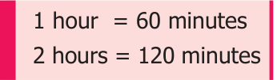

Example 4.3
Anbu bought 2 notebooks for ₹24. How much money will be needed to buy 9 such notebooks? Solution Using unitary method we can solve this as follows: The cost of 2 notebooks = ₹24 The cost of 1 notebook \(= \frac{24}{2} =\) ₹12 Therefore, the cost of 9 notebooks \(= 9 \times\) ₹12
= ₹108
Hence, Anbu has to pay ₹108 for 9 notebooks.
Example 4.4
A car travels 90km in 2hours 30minutes. How much time is required to cover 210km? Solution Time taken to cover 90 km = 2hrs 30mins

\(= 150\) minutes
Time taken to cover 1 km \(= \frac{150}{90}\) minutes. Time taken to cover 210 km \(= \frac{150}{90} \times\) 210minutes
\(= 350\) minutes
Thus, the time taken to travel 210 km is 5 hours 50 minutes

- Fill in the blanks
- If the cost of 8 apples is ₹56 then the cost of 12 apples is ________.
- If the weight of one fruit box is \(3 \frac{1}{2}\) kg, then the weight of 6 such boxes is ______.
- A car travels 60 km with 3 liters of petrol. If the car has to cover the distance of 200 km, it requires _______ liters of petrol.
- If the cost of 7 m cloth is ₹294, then the cost of 5 m of cloth is ______.
- If a machine in a cool drinks factory fills 600 bottles in 5 hrs, then it will fill ______ bottles in 3 hours.
- Say True or False
- Distance travelled by a bus and time taken are in direct proportion.
- Expenditure of a family to number of members of the family are in direct proportion.
- Number of students in a hostel and consumption of food are not in direct proportion.
- If Mallika walks 1 km in 20 minutes, then she can cover 3 km in 1 hour.
- If 12 men can dig a pond in 8 days, then 18 men can dig it in 6 days.

- A dozen bananas costs ₹20. What is the price of 48 bananas?
- A group of 21 students paid ₹840 as the entry fee for a magic show. How many students entered the magic show if the total amount paid was ₹1,680?
- A birthday party is arranged in third floor of a hotel. 120 people take 8 trips in a lift to go to the party hall. If 12 trips were made how many people would have attended the party?
- The shadow of a pole with the height of 8 m is 6m. If the shadow of another pole measured at the same time is 30m, find the height of the pole?
- A postman can sort out 738 letters in 6 hours. How many letters can be sorted in 9 hours?
- If half a meter of cloth costs ₹15. Find the cost of \(8 \frac{1}{3}\) meters of the same cloth.
- The weight of 72 books is 9kg. what is the weight of 40 such books? (using unitary method)
- Thamarai pays ₹7500 as rent for 3 months. With the same rate how much does she have to pay for 1 year? (using unitary method).
- Valli buys 10 pens for ₹180 and Kamala buys 8 pens for ₹96. Can you say who bought the pen cheaper? (using unitary method)
- A motorbike requires 2 litres of petrol to cover 100 kilometers. How many litres of
petrol will be required to cover 250 kilometers? (using unitary method)
Objective type questions
- If the cost of 3 books is ₹90, then find the cost of 12 books.
- ₹300 (ii) ₹320 (iii) ₹360 (iv) ₹400
- If Mani buys 5kg of potatoes for ₹75 then he can buy ______kg of potatoes for ₹105.
- 6 (ii) 7 (iii) 8 (iv) 5
- 35 cycles were produced in 5 days by a company then______ cycles will be produced in 21 days.
- 150 (ii) 70 (iii) 100 (iv) 147
- An aircraft can accommodate 280 people in 2 trips. It can take ______trips to take 1400 people.
- 8 (ii) 10 (iii) 9 (iv) 12
- Suppose 3 kg. of sugar is used to prepare sweets for 50 members, then ____ kg. of sugar is required for 150 members.
- 9 (ii) 10 (iii) 15 (iv) 6